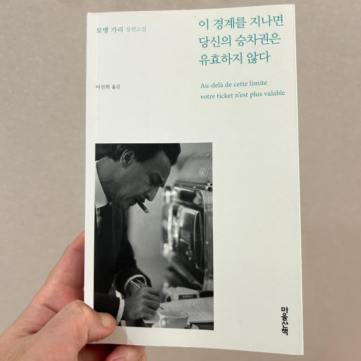

친한 지인이 추천해서 읽어본 로맹 가리의 1975년작 책 '이 경계를 지나면 당신의 승차권은 유효하지 않다' 를 읽어보았
습니다.

작년쯤 로맹 가리의 다른 이름인 '에밀 아자르' 로 발표된 '자기앞의 생'을 읽었었는데 이 번이 두 번째 같은 작가의 책 이
네요.
이 책은 한 때 젊은 날 일제치하의 독립 투사들 같이 2차 세계대전 프랑스에서 레지스탕스 활동을 했던 한 출판사 사장의
이야기 입니다. 이 소설은 그가 주인공이 아들에게 남기는 일종의 노트로, 일인칭 시점에서 자신의 이야기를 스스로 풀어
나갑니다.
그는 전쟁 후 비즈니스에서 성공을 거두어 사회적으로 부와 명예을 얻었지만 어느덧 60이 되어 늙어가는 그 앞에 그를 기
다리고 있는 것은 활력이 떨어지는 유럽의 경제와 서서히 무기력한 파멸을 향해 나아가는 그의 사업체, 그리고 브라질에서
온 20대의 매력적이고 활력이 넘치는 파트너 앞에서도 그저 물렁 물렁하기만 할 뿐 더이상 딱딱해지지 못하는 그의 남성
입니다.
주인공은 이렇게 서서히 다가오는 자신의 '죽음의 전조' 들에 대해서 스스로 자신은 다르다며 정신적으로 극복을 해볼려고
도 하고, 의사로부터 도움을 받아볼려고도 하고, 환상으로 도피하거나 4억프랑이라는 이름의 죽음으로 탈출을 해볼려고도
하지만 어느 하나도 제대로 되지 않습니다.
그리고 결국 레지스탕스 시절 미인계에 홀린 수많은 독일군 장교를 침대에서 살해했던 매력적인 레지스탕스, 아니 하지만
이제 동네 할머니가 된 옛 요원에게 마지막 명령을 하게 되는데....
ㅎㅎㅎ 스포가 될 수 있으니 여기서 절단 신공을 발휘하겠습니다.
책은 한국에도 널리 알려진 로맹 가리의 유명작 '자기앞의 생' 과 상당히 다릅니다. '자기앞의 생'이 인생에 대한 전반적인
관조를 어린아이의 시선에서 풀어낸 감정적으로 깊이있는 작품이었다면 '이 경계를 지나면 당신의 승차권은 유효하지 않
다 (아따 참 길다)' 는 냉소적인 유머와 담담한 문제로 상당히 드라이하게 읽히는 19금... 아니 49금 소설입니다.
막상 읽어보면 야설처럼 야하진 않은데, 그래도 묘사측면에서 49금 소설다운 적나라함이 있으니 이런 적나라함이 불편하
신 분은 적당히 걸러가면서 보시길.
스토리 자체는 제가 아직 그 나이가 안되어서
나는 아직 여전히 힘차고 좋은 아침이라고!
잘 이해를 못하는 것일 수도 있겠
습니다만, 남자로서는 언젠가 마주처야 할 그 현실에 대해서 담담하고 냉소적으로 글을 써 두었기 때문에 나름 그 나이대
분들께는 상당히 의미가 있게 읽힐 수도 있겠습니다
(아니야 우리에겐 V 솔루션이 있다고 V 솔루션!!)
저는 한국어판으로만 읽어봤는데,
책 중간중간에 '와 명문이다' 싶을 정도로 아름다운 문장들이 몇 개 있었습니다. 그래서 제가 책 귀퉁이를 접어두었어요.
여기 그 중 몇 개를 소개시켜 드려봅니다.
너무 늙어버린 육체 안에 자리 잡은
너무나도 젊은 마음들을 진정시키는 밤이 온다
책 첫 장
"뭐 하기 전에 죽는다고요?"
"바다가 오염되기 전에, 삶이 제 아름다운 깃털을 잃기 전에, 모든 장미가 회색이 되기 전에"
"회색 장미라, 그거 아주 예쁘겠는데요."
...... 내게 딸이 있었다면 아마 더 잘 극복했겠지.
p69
그는 나에게 등을 돌렸다.
우리는 우리가 너무나도 잘 알고 있는 사람들을 항상 과소평가한다.
p94
나는 계단을 성큼성큼 내려가서 택시로 튀어 올랐다. 로라는 호텔에 없었다. 그녀가 가끔 음악을 '마시러' 가는
브라질 클럽들을 돌아다녔다.
p180
그처럼 사람이 많이 사는 동네가 파리에 있다는 사실을 잊고 있었다. 거리에서 뛰어노는 아이들은 카스바에 사
는 주민의 얼굴, 미래의 청소부 얼굴을 하고 있었다. 창문 여기저기에서 아랍 음악이 흘러나았는데, 마치 제 운
명을 슬퍼하는 것 같았다.
책 첫 장
아래는 제가 이 책에서 가장 좋아했던 구절입니다.
(해설: 늙은 백만장자에게 초대받은 사람들이 수상스키를 타며 나무공을 던졌다가 받는 묘기를 하는 백만장자를
바라보는 장면)
....(전략) 사람들은 그칠 수 없는 웃음과 동정 사이에서 망설였다.
수완이 좋은 자들이었다.
"젊기도 하셔라! 힘도 좋으시지!"
"대단합니다"
"누가 일흔을 앞두었다고 하겠어요"
"몰리에르 시대에 마흔 먹은 남자는 이미 늙은이라고 여겼다지요!"
"요즘 보기 드물게 놀라운 사람이라고 제가 늘 말씀드렸지요."
하지만 내 쪽에 있던 스무 살 남짓 젊은이는 작은 소리로 노동가를 흥얼거렸다.
"최~후~의~ 전투......"
p11
읽고 빵터졌네요. ㅎㅎ참고로 이 스무 살 남짓 젊은이는 나중에 엄청나게 큰 부자가 되어 주인공에게 큰 도움을 줍니다.
집에 고이 모셔둘만한 책은 아닙니다만 (원래 소설이 소장 점수가 박함) 한 번쯤은 프랑스 문학에 관심이 있으시면 읽어볼
만한 내용입니다. 내용도 평이하고 책이 길지도 않으니 빨리 읽으시는 분들은 하루 이틀만에도 다 읽으실꺼에요.
끝.